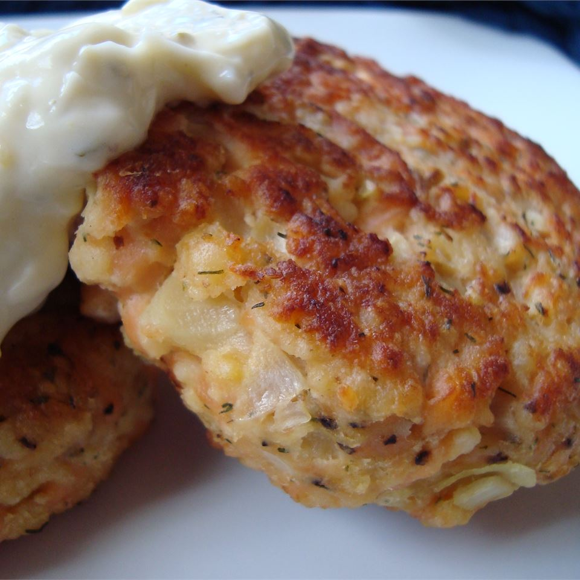

Potato Salmon Patties

Description
My kids do not like anything fishy. I snuck this one by them and they loved
it. I serve them as snacks, sandwiches, or as dinner with rice and a veggie on
the side. Personally I like to dip them in horseradish and snack away!! Hope
you like them.
Ingredients
- 1 (14.75 ounce) can salmon, drained and flaked
- 2 eggs, beaten
- ¼ cup garlic and herb seasoned dry bread crumbs
- ¼ cup dry potato flakes
- 1 medium onion, minced
- 1 clove garlic, minced
- ¼ teaspoon dried dill weed
- ¼ teaspoon celery salt
- salt and pepper to taste
- 2 tablespoons olive oil
Steps
-
In a medium bowl, mix salmon, eggs, garlic and herb seasoned dry bread
crumbs, dry potato flakes, onion, garlic, dill weed, celery salt, salt, and
pepper. Form the mixture into 2 inch balls, and flatten into patties about
1/2 inch thick.
-
Heat olive oil in a medium skillet over medium heat. In batches, cook
patties about 5 minutes on each side, until lightly browned.